Cap. 2 Regressão
A regressão em geral tem como objetivo:
- Medir a influência de uma ou mais variáveis explicativas (x) sobre a variável resposta (y);
- Predição de uma variável resposta (y) a partir de uma ou mais variáveis explicativas (x).
2.1 Conjunto de dados
Este conjunto de dados foram criados pela professora Dra.Olga Satomi Yoshida para aula de Big Data no IPT.
- Preço das casas: Data_HousePrice_Area.xlsx
- Consumo de energia: Data_ConsumoEnergia.xlsx
- SALES_X_YOUTUBE: DadosAula06.xlsx
- CREDIT SCORE X RENDA E OUTRAS V: DadosAula06.xlsx
2.2 Preço das casas
Análise descritiva e regressão linear sobre o conjunto de dados Data_HousePrice_Area.xlsx.
2.2.1 Pacotes
Pacotes necessários para estes exercícios:
library(readxl)
library(tidyverse)
library(readxl)
library(ggthemes)
library(plotly)
library(knitr)
library(kableExtra)2.2.2 Conjunto de dados
dadosCen01 = read_excel("../dados/Data_HousePrice_Area.xlsx", sheet = 1)
dadosCen02 = read_excel("../dados/Data_HousePrice_Area.xlsx", sheet = 2)Dados do cenário 01
| Square Feet | House Price |
|---|---|
| 1400 | 245 |
| 1600 | 312 |
| 1700 | 279 |
| 1875 | 308 |
| 1100 | 199 |
| 1550 | 219 |
| 2350 | 405 |
| 2450 | 324 |
| 1425 | 319 |
| 1700 | 255 |
Dados do cenário 02
| Square Feet | House Price |
|---|---|
| 1400 | 245 |
| 1800 | 312 |
| 1700 | 279 |
| 1875 | 308 |
| 1200 | 199 |
| 1480 | 219 |
| 2350 | 405 |
| 2100 | 324 |
| 2000 | 319 |
| 1700 | 255 |
Dispersão dos valores para os dois cenários:

Comparando os dois gráficos, podemos observar:
- O primeiro conjunto é mais esparso
- O segundo cenário os dados estão agrupados de forma linear
2.2.3 Descrevendo os dados:
2.2.3.1 Cenário 1
House Price
summary(dadosCen01$`House Price`)## Min. 1st Qu. Median Mean 3rd Qu. Max.
## 199.0 247.5 293.5 286.5 317.2 405.0Square Feet
summary(dadosCen01$`Square Feet`)## Min. 1st Qu. Median Mean 3rd Qu. Max.
## 1100 1456 1650 1715 1831 2450Distribuição dos valores
hist(dadosCen01$`House Price`)
2.2.3.2 Cenário 2
House Price
summary(dadosCen02$`House Price`)## Min. 1st Qu. Median Mean 3rd Qu. Max.
## 199.0 247.5 293.5 286.5 317.2 405.0Square Feet
summary(dadosCen02$`Square Feet`)## Min. 1st Qu. Median Mean 3rd Qu. Max.
## 1200 1535 1750 1760 1969 2350Distribuição dos valores
hist(dadosCen01$`House Price`)
2.2.4 Ajustes de modelos lineares simples
Vamos agora ajustar um modelo de regressão para ambos os cenários.
2.2.4.1 Cenário 01
modelCen01 <- lm(dadosCen01$`House Price` ~ dadosCen01$`Square Feet`)
modelCen01##
## Call:
## lm(formula = dadosCen01$`House Price` ~ dadosCen01$`Square Feet`)
##
## Coefficients:
## (Intercept) dadosCen01$`Square Feet`
## 98.2483 0.1098\(y = 98.2483296 + 0.1097677 x\)
resumoMod01 = summary(modelCen01)
resumoMod01##
## Call:
## lm(formula = dadosCen01$`House Price` ~ dadosCen01$`Square Feet`)
##
## Residuals:
## Min 1Q Median 3Q Max
## -49.388 -27.388 -6.388 29.577 64.333
##
## Coefficients:
## Estimate Std. Error t value Pr(>|t|)
## (Intercept) 98.24833 58.03348 1.693 0.1289
## dadosCen01$`Square Feet` 0.10977 0.03297 3.329 0.0104 *
## ---
## Signif. codes: 0 '***' 0.001 '**' 0.01 '*' 0.05 '.' 0.1 ' ' 1
##
## Residual standard error: 41.33 on 8 degrees of freedom
## Multiple R-squared: 0.5808, Adjusted R-squared: 0.5284
## F-statistic: 11.08 on 1 and 8 DF, p-value: 0.01039\(R^2 = 0.58\)
Vamos analisar os resíduos:
plot(modelCen01$residuals ~ dadosCen01$`House Price`)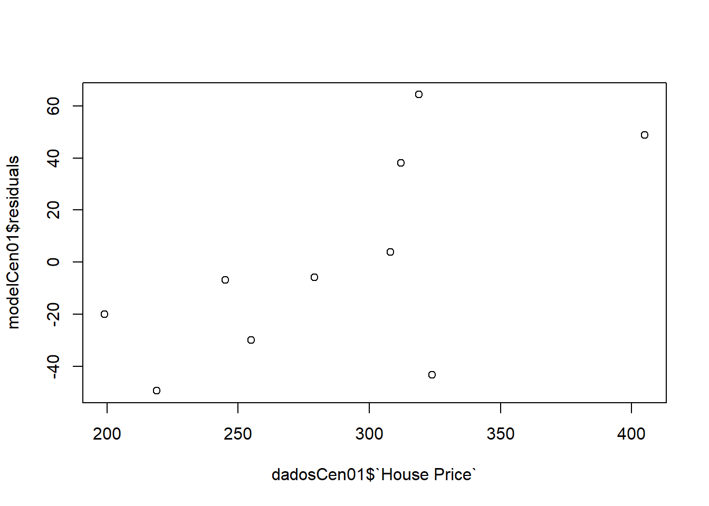
plot(modelCen01, pch = 16, col = "blue") 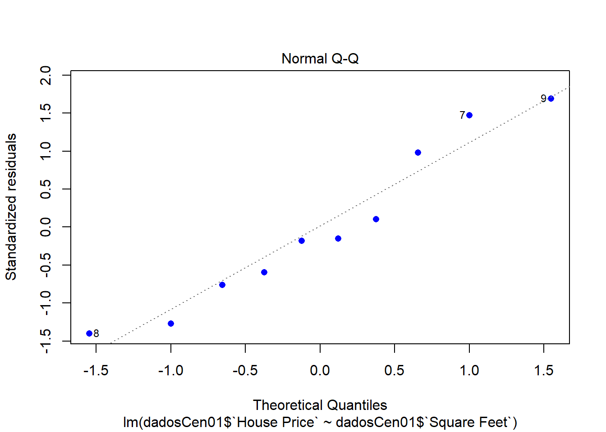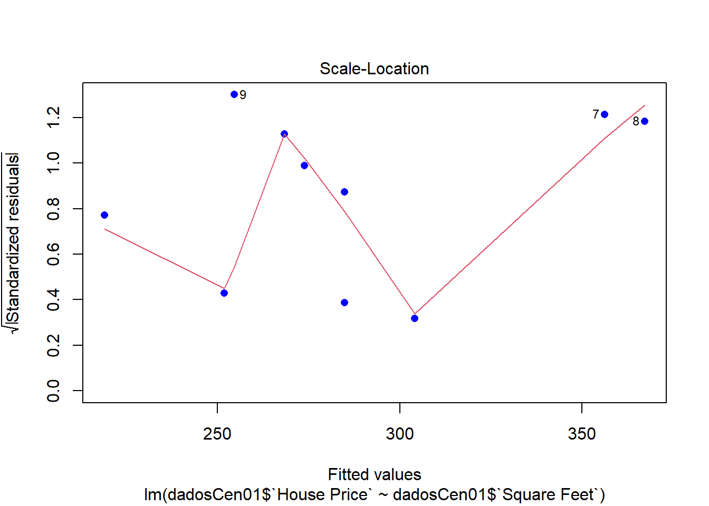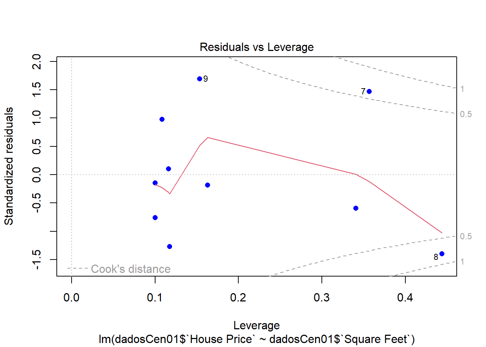
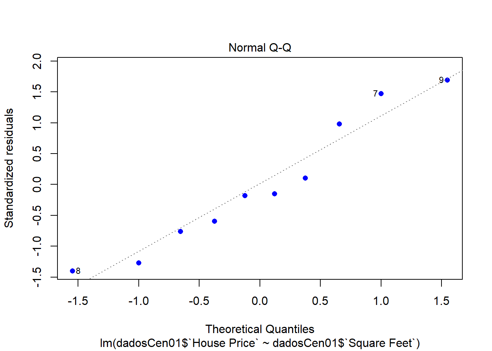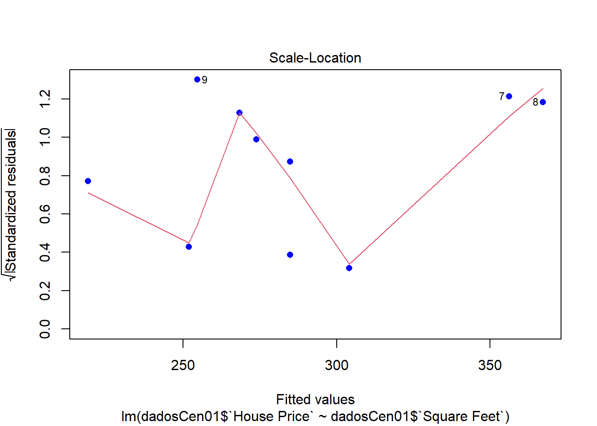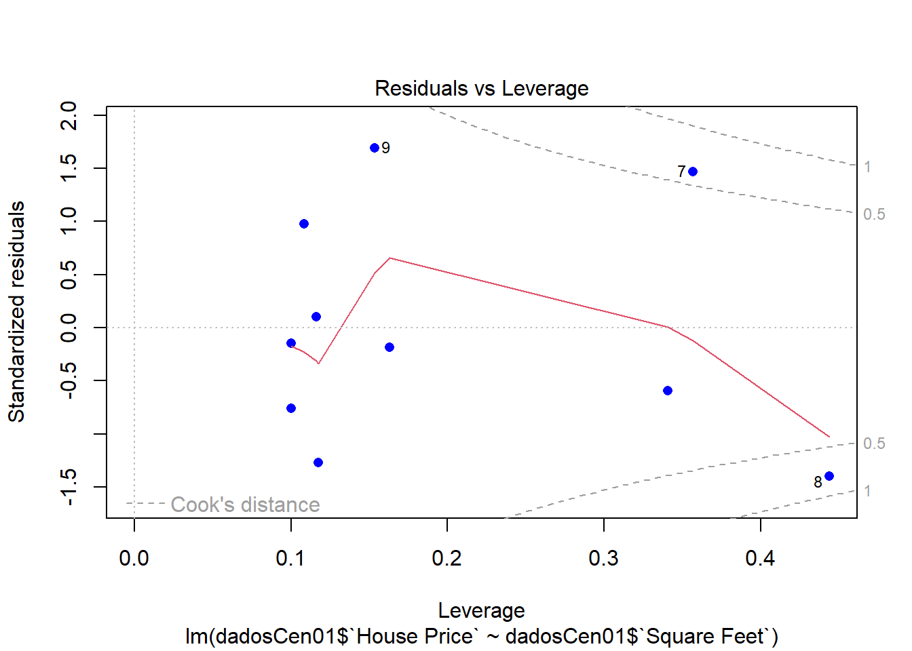
plot(dadosCen01$`House Price` ~ dadosCen01$`Square Feet`)
abline(modelCen01) #Add a regression line
Como as observações são mais esparças, um modelo linear simples não se ajusta muito bem.
2.2.4.2 Cenário 02
y <- dadosCen02$`House Price`
x <- dadosCen02$`Square Feet`
modelCen02 <- lm(y ~ x)
modelCen02##
## Call:
## lm(formula = y ~ x)
##
## Coefficients:
## (Intercept) x
## -9.6451 0.1682\(y = -9.6450892 + 0.1682165 x\)
plot(modelCen02, pch = 16, col = "blue") 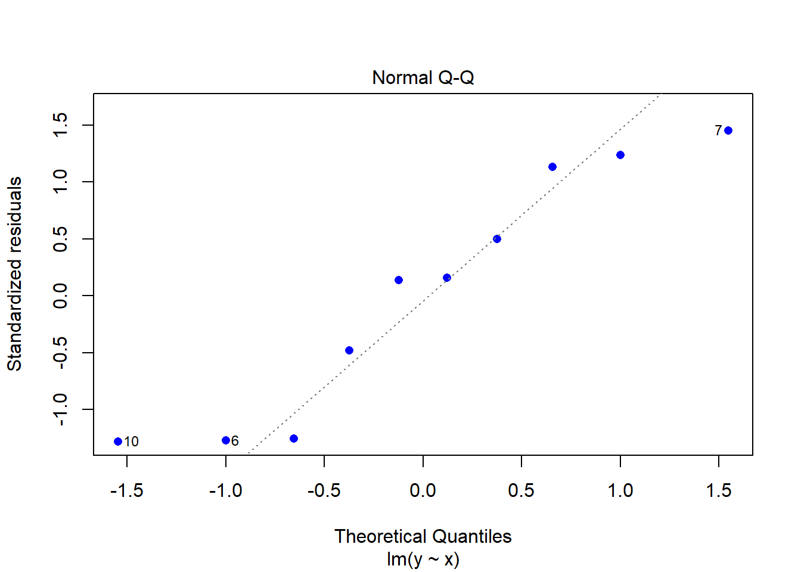
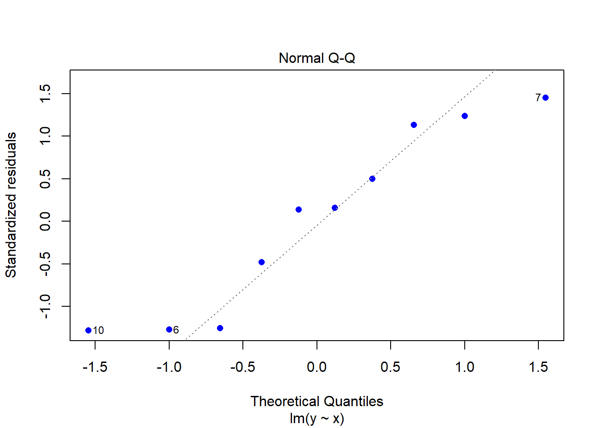

plot(dadosCen01$`House Price` ~ dadosCen01$`Square Feet`)
abline(modelCen01) #Add a regression line
resumoMod02 = summary(modelCen02)
resumoMod02##
## Call:
## lm(formula = y ~ x)
##
## Residuals:
## Min 1Q Median 3Q Max
## -21.323 -16.654 2.458 15.838 19.336
##
## Coefficients:
## Estimate Std. Error t value Pr(>|t|)
## (Intercept) -9.64509 30.46626 -0.317 0.76
## x 0.16822 0.01702 9.886 9.25e-06 ***
## ---
## Signif. codes: 0 '***' 0.001 '**' 0.01 '*' 0.05 '.' 0.1 ' ' 1
##
## Residual standard error: 17.56 on 8 degrees of freedom
## Multiple R-squared: 0.9243, Adjusted R-squared: 0.9149
## F-statistic: 97.73 on 1 and 8 DF, p-value: 9.246e-06\(R^2 = 0.92\)
Vamos analisar os resíduos:
plot(modelCen02$residuals ~ dadosCen02$`House Price`)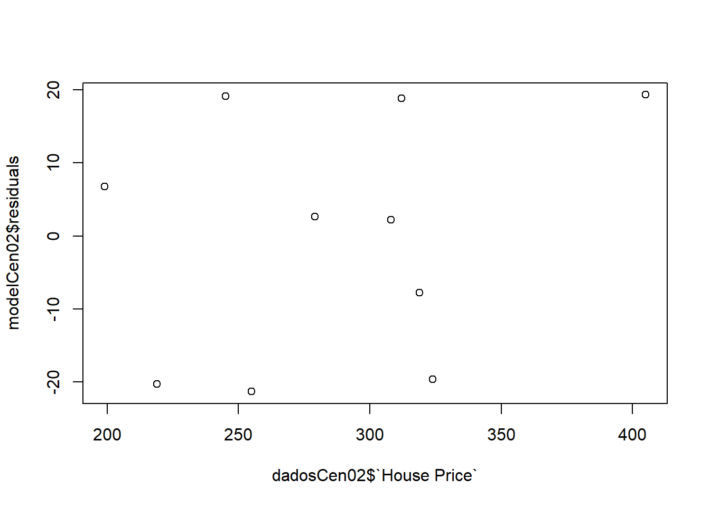
Neste cenário as observações estão mais agrupadas próximas a uma reta, sendo assim o modelo linear simples descreveu melhor as observações.
2.3 Análise conjunto energia
Análise descritiva e regressão linear sobre o conjunto de dados Data_ConsumoEnergia.xlsx.
2.3.1 Pacotes
Pacotes necessários para estes exercícios:
library(readxl)
library(tidyverse)
library(readxl)
library(ggthemes)
library(plotly)
library(knitr)
library(kableExtra)2.3.2 Conjunto de dados
| Ajuste na maquina | Consumo de energia |
|---|---|
| 11.15 | 21.6 |
| 15.70 | 4.0 |
| 18.90 | 1.8 |
| 19.40 | 1.0 |
| 21.40 | 1.0 |
| 21.70 | 0.8 |
| 25.30 | 3.8 |
| 26.40 | 7.4 |
| 26.70 | 4.3 |
| 29.10 | 36.2 |
Um gráfico dos dados:
Ajustando os modelos:
modelEner01 = lm(`Consumo de energia`~`Ajuste na maquina`, data = dados02)
modelEner02 = lm(`Consumo de energia`~`Ajuste na maquina` + I(`Ajuste na maquina`^2), data = dados02)
modelEner03 = lm(`Consumo de energia`~`Ajuste na maquina` + I(`Ajuste na maquina`^2) + I(`Ajuste na maquina`^3), data = dados02)
modelEner04 = lm(`Consumo de energia`~`Ajuste na maquina` + I(`Ajuste na maquina`^2) + I(`Ajuste na maquina`^3)+ I(`Ajuste na maquina`^4), data = dados02) Gráfico do ajuste dos modelos:
x = seq(0,40, 0.1)
y1 = modelEner01$coefficients[1] + modelEner01$coefficients[2]*x
y2 = modelEner02$coefficients[1] + modelEner02$coefficients[2]*x + modelEner02$coefficients[3]*x^2
y3 = modelEner03$coefficients[1] + modelEner03$coefficients[2]*x + modelEner03$coefficients[3]*x^2 + modelEner03$coefficients[4]*x^3
y4 = modelEner04$coefficients[1] + modelEner04$coefficients[2]*x + modelEner04$coefficients[3]*x^2 + modelEner04$coefficients[4]*x^3 + modelEner04$coefficients[5]*x^4
par(mfrow = c(1,1))
plot(`Consumo de energia`~`Ajuste na maquina`, data = dados02, col = 1, pch = 16, xlab = "Ajuste na máquina", ylab = "Consumo de energia", main = "Consumo de energia x Ajuste na máquina", ylim = c(-10, 40))
lines(y1~x, col = 2, lty = 1, lwd = 2)
lines(y2~x, col = 3, lty = 2, lwd = 2)
lines(y3~x, col = 4, lty = 3, lwd = 2)
lines(y4~x, col = 5, lty = 4, lwd = 2)
legend("top", legend = c("Linear", "Grau 2", "Grau 3", "Grau 4"), fill = c(2,3,4,5))
O modelo polinomial de grau 2 representou bem as observações sem o risco de perda de generalização.
Polinômios de graus mais altos correm o risco de não generalizarem o fenômeno, embora se saiam muito bem com as observações do treinamento.
2.4 Análise Conjunto vendas vs fontes de publidades
Análise descritiva e regressão linear sobre o conjunto de dados SALES_X_YOUTUBE em DadosAula06.xlsx.
2.4.1 Pacotes
Pacotes necessários para estes exercícios:
library(readxl)
library(tidyverse)
library(readxl)
library(ggthemes)
library(plotly)
library(knitr)
library(kableExtra)2.4.2 Conjunto de dados
dados03 = read_excel(path = "../dados/04_LABORATORIO REGRESSAO COM DADOS 03_DADOS.xlsx", sheet = 3)
dados03 = dados03[,2:5]
# tail(dados03, 3)
# dados03_t = pivot_longer(dados03, c(2:5))
# names(dados03_t) = c("Indice", "Grupo", "Valor")
kable(dados03) %>%
kable_styling(latex_options = "striped")Vendas em relação aos anúncios no youtube.
## `geom_smooth()` using formula = 'y ~ x'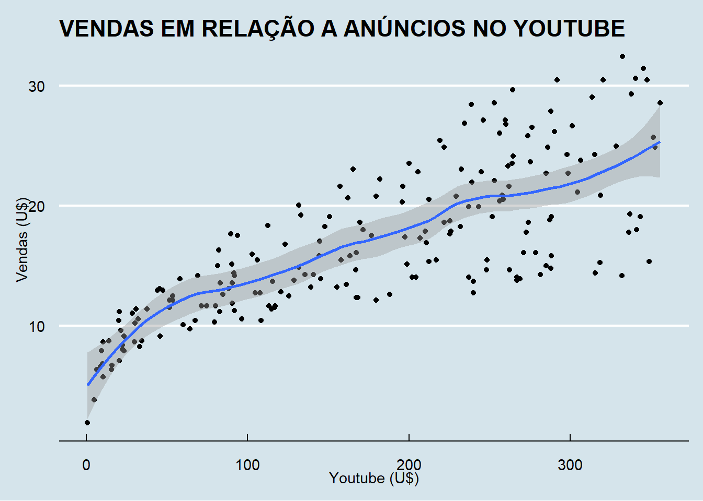
## `geom_smooth()` using formula = 'y ~ x'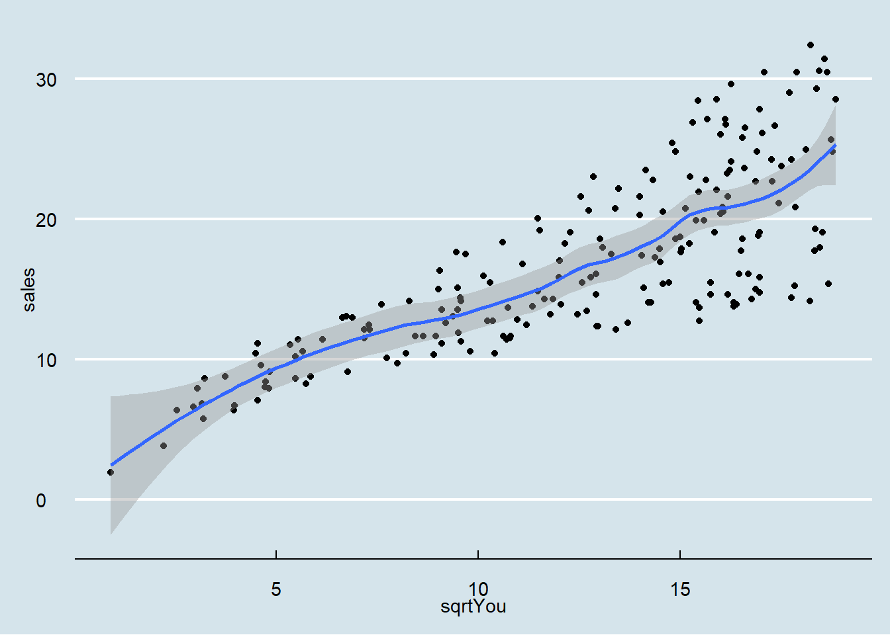
## `geom_smooth()` using formula = 'y ~ x'
Ajustando um modelo linear simples
model = lm(sales ~ sqrtYou, data = dados03_mod)
summary(model)##
## Call:
## lm(formula = sales ~ sqrtYou, data = dados03_mod)
##
## Residuals:
## Min 1Q Median 3Q Max
## -8.916 -2.344 -0.131 2.326 9.316
##
## Coefficients:
## Estimate Std. Error t value Pr(>|t|)
## (Intercept) 3.20688 0.80092 4.004 8.8e-05 ***
## sqrtYou 1.09042 0.06029 18.085 < 2e-16 ***
## ---
## Signif. codes: 0 '***' 0.001 '**' 0.01 '*' 0.05 '.' 0.1 ' ' 1
##
## Residual standard error: 3.854 on 198 degrees of freedom
## Multiple R-squared: 0.6229, Adjusted R-squared: 0.621
## F-statistic: 327.1 on 1 and 198 DF, p-value: < 2.2e-16O gráfico mostra as observações em relação ao modelo.
plot(sales ~ sqrtYou, data = dados03_mod)
abline(model)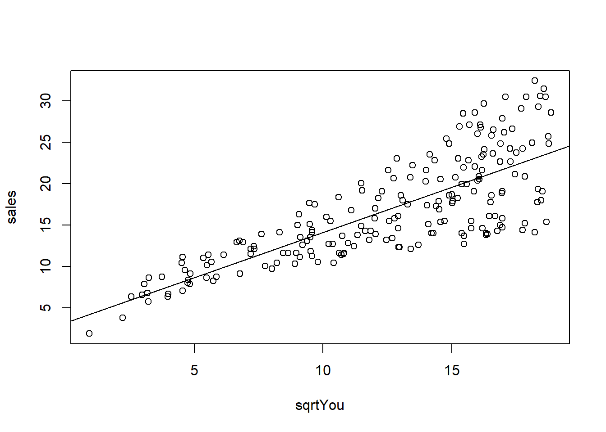 Analisando os resíduos.
plot(model) 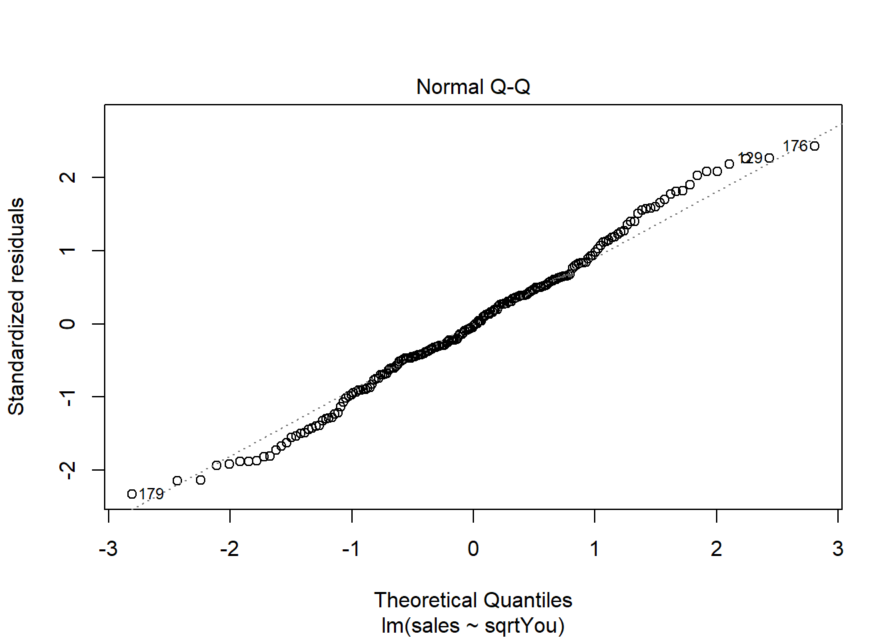
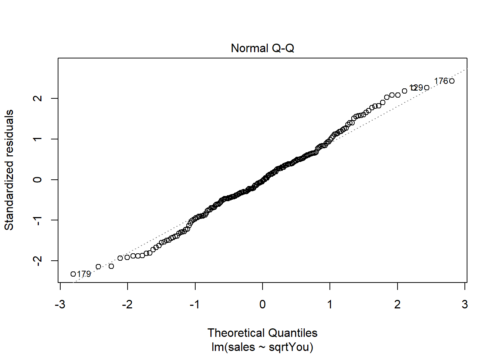 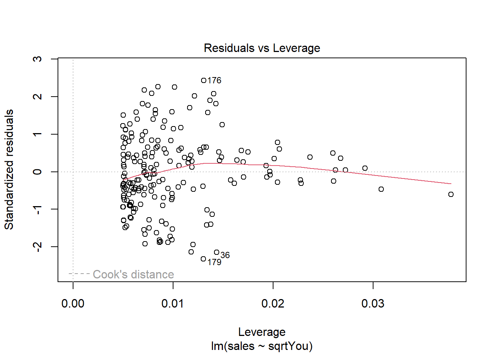
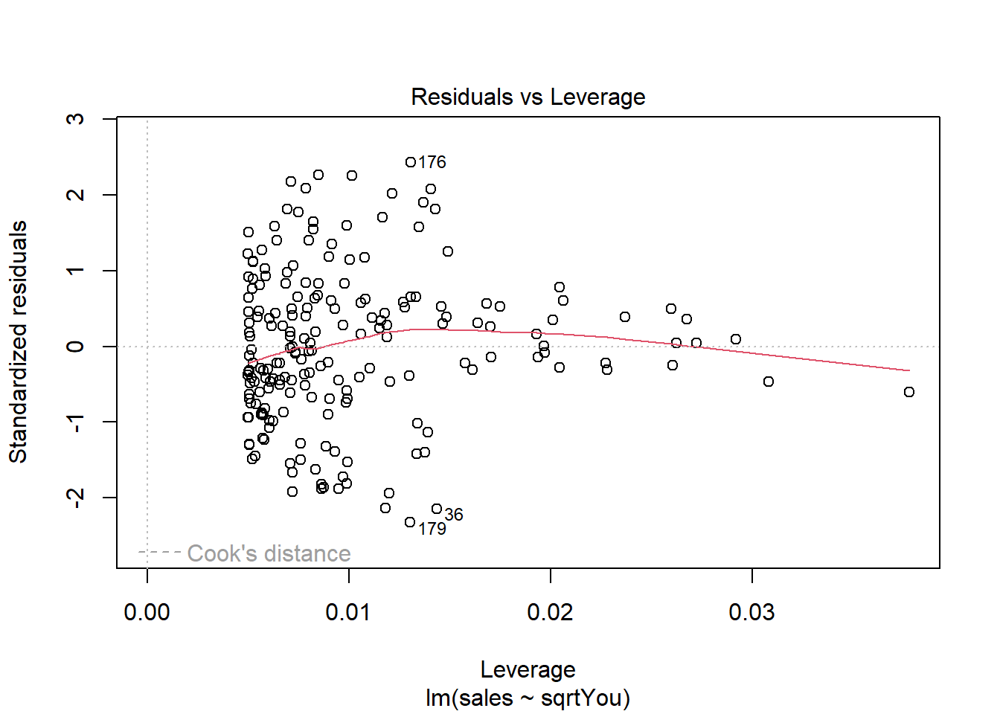
Ajustando o modelo a mais variáveis (multiclass).
modelMult = lm(sales ~ youtube + facebook + newspaper, data = dados03)
summary(modelMult)##
## Call:
## lm(formula = sales ~ youtube + facebook + newspaper, data = dados03)
##
## Residuals:
## Min 1Q Median 3Q Max
## -10.5932 -1.0690 0.2902 1.4272 3.3951
##
## Coefficients:
## Estimate Std. Error t value Pr(>|t|)
## (Intercept) 3.526667 0.374290 9.422 <2e-16 ***
## youtube 0.045765 0.001395 32.809 <2e-16 ***
## facebook 0.188530 0.008611 21.893 <2e-16 ***
## newspaper -0.001037 0.005871 -0.177 0.86
## ---
## Signif. codes: 0 '***' 0.001 '**' 0.01 '*' 0.05 '.' 0.1 ' ' 1
##
## Residual standard error: 2.023 on 196 degrees of freedom
## Multiple R-squared: 0.8972, Adjusted R-squared: 0.8956
## F-statistic: 570.3 on 3 and 196 DF, p-value: < 2.2e-16plot(modelMult)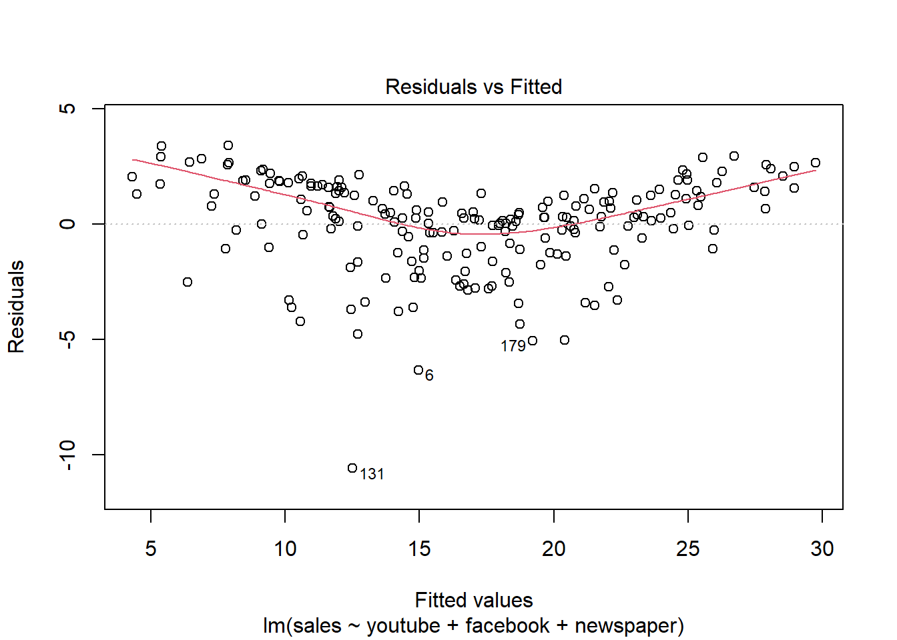
 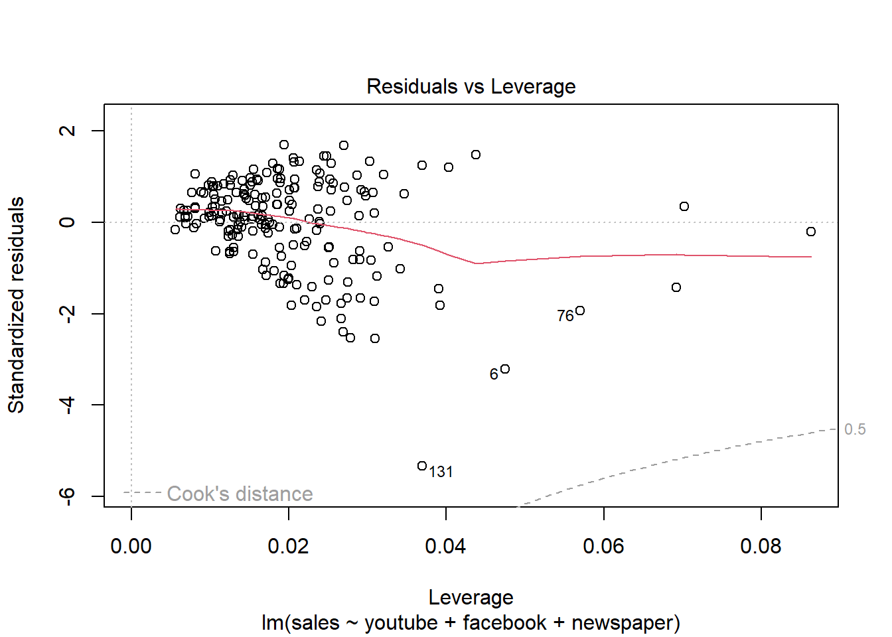
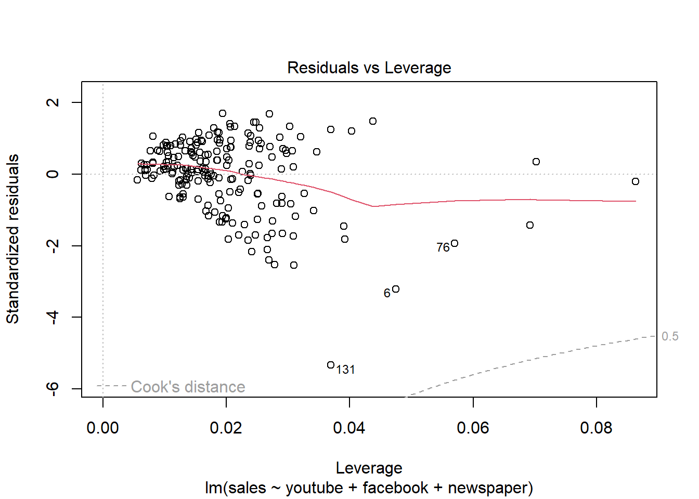
Newspaper tem pouca influência no modelo, sendo o youtube a que mais influência nas vendas.
modelMult2 = lm(sales ~ youtube + facebook, data = dados03)
summary(modelMult2)##
## Call:
## lm(formula = sales ~ youtube + facebook, data = dados03)
##
## Residuals:
## Min 1Q Median 3Q Max
## -10.5572 -1.0502 0.2906 1.4049 3.3994
##
## Coefficients:
## Estimate Std. Error t value Pr(>|t|)
## (Intercept) 3.50532 0.35339 9.919 <2e-16 ***
## youtube 0.04575 0.00139 32.909 <2e-16 ***
## facebook 0.18799 0.00804 23.382 <2e-16 ***
## ---
## Signif. codes: 0 '***' 0.001 '**' 0.01 '*' 0.05 '.' 0.1 ' ' 1
##
## Residual standard error: 2.018 on 197 degrees of freedom
## Multiple R-squared: 0.8972, Adjusted R-squared: 0.8962
## F-statistic: 859.6 on 2 and 197 DF, p-value: < 2.2e-16plot(modelMult2)
 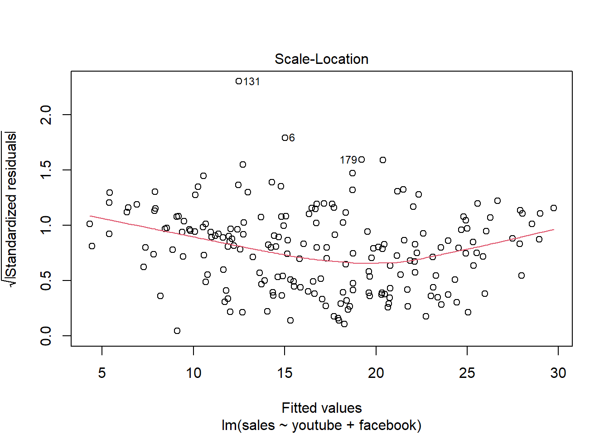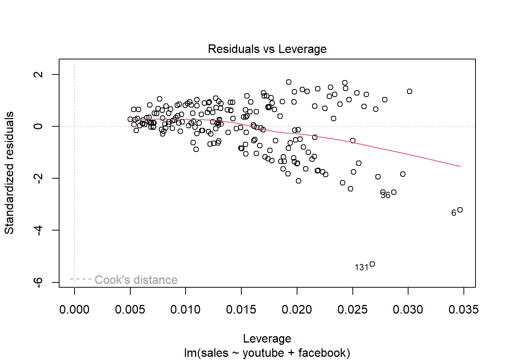
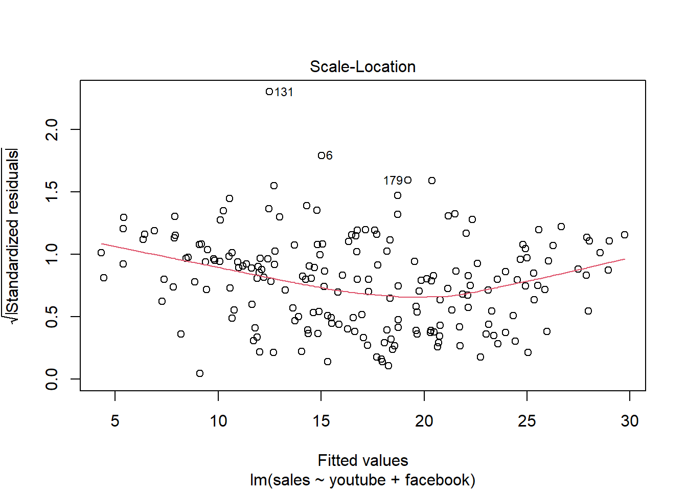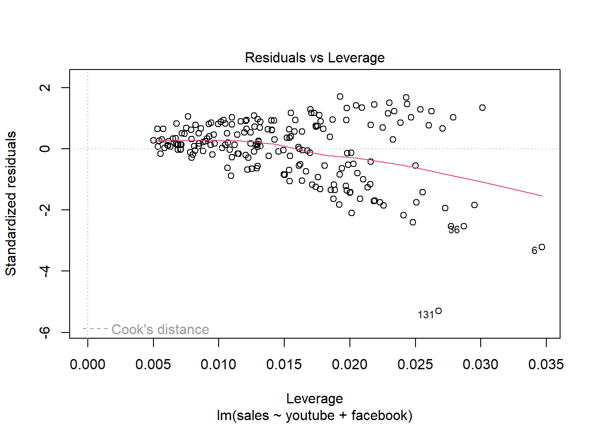
2.5 Análise conjunto ST vs demais variáveisCREDIT SCORE X RENDA E OUTRAS V
Análise descritiva e regressão linear sobre o conjunto de dados CREDIT SCORE X RENDA E OUTRAS V em DadosAula06.xlsx.
2.5.1 Pacotes
Pacotes necessários para estes exercícios:
library(readxl)
library(tidyverse)
library(readxl)
library(ggthemes)
library(plotly)
library(knitr)
library(kableExtra)2.5.2 Conjunto de dados
Analise se o cliente pode receber o crédito de acordo com a análise. As variáveis são:
- ST - Situação (0 - Passou na análise, 1 - Nâo passou na análise) - Y
- R - Renda - X
- ND - Num Dependentes - X
- VE - Vinculo Empregaticio - X
dados04 = read_excel(path = "../dados/04_LABORATORIO REGRESSAO COM DADOS 03_DADOS.xlsx", sheet = 4)
dados04 = dados04[,18:21]
dados04$ST = factor(dados04$ST)
dados04$VE = factor(dados04$VE)
kable(dados04) %>%
kable_styling(latex_options = "striped")Situação explicada pela renda.
plot(dados04$R ~ dados04$ST)
O modelo é
\[ \log{\left(\frac{P(y_i=1)}{1-P(y_i=1)}\right)} = \beta_0 + \beta_1 x_1 + \beta_2 x_2 + \beta_3 x_3 + \epsilon_i \]
\[ \frac{P(y=1)}{1-P(y=1)} = e^{(\beta_0 + \beta_1 x_1 + \beta_2 x_2 + \beta_3 x_3)} \]
O ajuste é
modelo04 = glm(dados04$ST ~ dados04$R + dados04$ND + dados04$VE, family = binomial(link='logit'))
valoresPredito = predict.glm(modelo04, type = "response")
summary(modelo04)##
## Call:
## glm(formula = dados04$ST ~ dados04$R + dados04$ND + dados04$VE,
## family = binomial(link = "logit"))
##
## Deviance Residuals:
## Min 1Q Median 3Q Max
## -2.6591 -0.2633 -0.0531 0.4187 2.0147
##
## Coefficients:
## Estimate Std. Error z value Pr(>|z|)
## (Intercept) 1.1117 1.5725 0.707 0.479578
## dados04$R -1.7872 0.4606 -3.880 0.000105 ***
## dados04$ND 0.9031 0.3857 2.341 0.019212 *
## dados04$VE1 2.9113 0.8506 3.423 0.000620 ***
## ---
## Signif. codes: 0 '***' 0.001 '**' 0.01 '*' 0.05 '.' 0.1 ' ' 1
##
## (Dispersion parameter for binomial family taken to be 1)
##
## Null deviance: 126.450 on 91 degrees of freedom
## Residual deviance: 51.382 on 88 degrees of freedom
## AIC: 59.382
##
## Number of Fisher Scoring iterations: 6Os valores preditos são:
## Warning in confusionMatrix.default(valoresPredito_cl, dados04$ST): Levels are
## not in the same order for reference and data. Refactoring data to match.
## Warning in confusionMatrix.default(valoresPredito_cl, dados04$ST): Levels are
## not in the same order for reference and data. Refactoring data to match.## Confusion Matrix and Statistics
##
## Reference
## Prediction 0 1
## 0 46 5
## 1 5 36
##
## Accuracy : 0.8913
## 95% CI : (0.8092, 0.9466)
## No Information Rate : 0.5543
## P-Value [Acc > NIR] : 2.554e-12
##
## Kappa : 0.78
##
## Mcnemar's Test P-Value : 1
##
## Sensitivity : 0.9020
## Specificity : 0.8780
## Pos Pred Value : 0.9020
## Neg Pred Value : 0.8780
## Prevalence : 0.5543
## Detection Rate : 0.5000
## Detection Prevalence : 0.5543
## Balanced Accuracy : 0.8900
##
## 'Positive' Class : 0
## Matriz de confusão
draw_confusion_matrix(cm)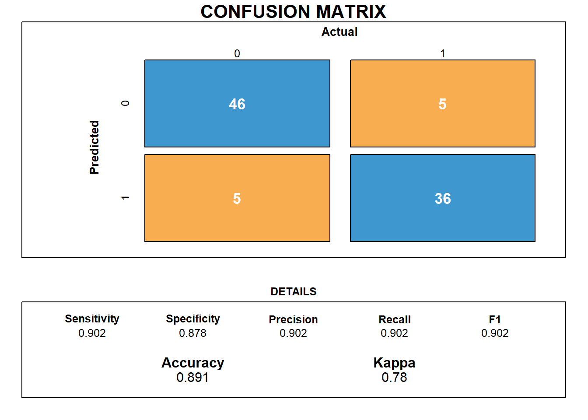
A acurácia do modelo é de 89% e a sensibilidade é alta, em torno de 90%. Nos dados treinados o acerto de “passou na análise” foi de 100% (46/46). Já a especificidade é de 88% havendo confusão com 5/46 observações. O mesmo ocorreu para “não passou na análise”, onde 36/46 observações estão corretas e 5/46 não.
2.6 Consumo alimentar médio
Análise descritiva e regressão linear.
2.6.1 Pacotes
Pacotes necessários para estes exercícios:
library(readxl)
library(tidyverse)
library(readxl)
library(ggthemes)
library(plotly)
library(knitr)
library(kableExtra)
library(factoextra)2.6.2 Conjunto de dados
Considere os dados a seguir do consumo alimentar médio de diferentes tipos de alimentos para famílias classificadas de acordo com o número de filhos (2, 3, 4 ou 5) e principal área de trabalho (MA: Setor de Trabalho Manual, EM: Empregados do Setor Público ou CA: Cargos Administrativos).
Fonte: LABORATORIO-R.pdf
dados = tibble(AreaTrabalho = as.factor(rep(c("MA", "EM", "CA"), 4)),
Filhos = as.factor(rep(2:5, each = 3)),
Paes = c(332, 293, 372, 406, 386, 438, 534, 460, 385, 655, 584, 515),
Vegetais = c(428, 559, 767, 563, 608, 843, 660, 699, 789, 776, 995, 1097),
Frutas = c(354, 388, 562, 341, 396, 689, 367, 484, 621, 423, 548, 887),
Carnes = c(1437,1527,1948,1507,1501,2345,1620,1856,2366,1848,2056,2630),
Aves = c(526, 567, 927, 544, NA, 1148,638, 762, 1149,759, 893, 1167),
Leite = c(247, 239, 235, 324, 319, 243, 414, 400, 304, 495, 518, 561),
Alcoolicos = c(427, 258, 433, 407, 363, 341, 407, 416, 282, 486, 319, 284))
kable(dados) %>%
kable_styling(latex_options = "striped")2.6.3 Regressão
#dummy <- dummyVars(" ~ .", data=dados)
#dadosS <- data.frame(predict(dummy, newdata = dados))
dadosS = subset(dados, select=c("Aves", "Filhos", "Paes", "Vegetais", "Frutas", "Carnes", "Leite", "Alcoolicos"))
#modelo = lm(dadosS$Aves ~ dadosS$AreaTrabalho.CA + dadosS$AreaTrabalho.EM + dadosS$AreaTrabalho.MA + dadosS$Filhos.2 + dadosS$Filhos.3 + dadosS$Filhos.4 + dadosS$Filhos.5 + dadosS$Paes + dadosS$Vegetais + dadosS$Frutas + dadosS$Carnes + dadosS$Leite + dadosS$Alcoolicos)
modelo = lm(Aves ~ Filhos + Paes + Vegetais + Frutas + Carnes + Leite + Alcoolicos, data = dadosS)
valoresPredito = predict.lm(modelo, type = "response")
summary(modelo)##
## Call:
## lm(formula = Aves ~ Filhos + Paes + Vegetais + Frutas + Carnes +
## Leite + Alcoolicos, data = dadosS)
##
## Residuals:
## 1 2 3 4 6 7 8 9 10 11 12
## 11.874 -9.816 -2.058 -1.250 1.250 3.533 -5.322 1.789 -8.056 9.567 -1.510
##
## Coefficients:
## Estimate Std. Error t value Pr(>|t|)
## (Intercept) -746.3706 632.2722 -1.180 0.447
## Filhos3 -75.6290 123.1415 -0.614 0.649
## Filhos4 -105.4167 262.6281 -0.401 0.757
## Filhos5 -192.0193 421.1901 -0.456 0.728
## Paes 0.1803 0.3299 0.547 0.681
## Vegetais 0.2438 0.2282 1.068 0.479
## Frutas -0.7431 0.9391 -0.791 0.574
## Carnes 0.9335 0.5221 1.788 0.325
## Leite -0.1543 1.1509 -0.134 0.915
## Alcoolicos 0.1313 0.2243 0.586 0.663
##
## Residual standard error: 21.15 on 1 degrees of freedom
## (1 observation deleted due to missingness)
## Multiple R-squared: 0.9993, Adjusted R-squared: 0.9928
## F-statistic: 153.7 on 9 and 1 DF, p-value: 0.06252confint(modelo)## 2.5 % 97.5 %
## (Intercept) -8780.151071 7287.409914
## Filhos3 -1640.289906 1489.031864
## Filhos4 -3442.422544 3231.589190
## Filhos5 -5543.747107 5159.708466
## Paes -4.010944 4.371643
## Vegetais -2.655840 3.143461
## Frutas -12.674990 11.188748
## Carnes -5.701068 7.567978
## Leite -14.778470 14.469823
## Alcoolicos -2.718471 2.981129rse = sigma(modelo)/mean(dadosS$Aves, na.rm = TRUE)
rse## [1] 0.02562551plot(dadosS, pch = 16, col = "blue") #Plot the results
plot(modelo$residuals, pch = 16, col = "red")
Verificando modelo
library(performance)
check_model(modelo)
2.6.4 Predição
predict(modelo, interval = "prediction")## Warning in predict.lm(modelo, interval = "prediction"): predictions on current data refer to _future_ responses## fit lwr upr
## 1 514.1259 165.2536 862.9982
## 2 576.8163 217.7647 935.8679
## 3 929.0578 549.8593 1308.2563
## 4 545.2501 165.4832 925.0169
## 6 1146.7499 766.9831 1526.5168
## 7 634.4669 257.0284 1011.9055
## 8 767.3224 393.2881 1141.3567
## 9 1147.2107 767.7924 1526.6290
## 10 767.0563 401.0010 1133.1117
## 11 883.4332 523.2959 1243.5705
## 12 1168.5105 788.8965 1548.1245p = predict.lm(modelo, newdata = data.frame(Filhos = as.factor(3), Paes = 386, Vegetais = 608, Frutas = 396, Carnes = 1501, Leite = 319, Alcoolicos = 363))
p## 1
## 501.1353O valor da Ave na linha 5 é \(501.135316\)
Ajustando o conjunto de dados:
O valor de Aves é \(NA\):
dados[5, ]## # A tibble: 1 × 9
## AreaTrabalho Filhos Paes Vegetais Frutas Carnes Aves Leite Alcoolicos
## <fct> <fct> <dbl> <dbl> <dbl> <dbl> <dbl> <dbl> <dbl>
## 1 EM 3 386 608 396 1501 NA 319 363Vamos ajustar o conjunto de dados com o valor predito para aves:
dados[5, ]['Aves'] = pConjunto de dados ajustado:
dados[5, ]## # A tibble: 1 × 9
## AreaTrabalho Filhos Paes Vegetais Frutas Carnes Aves Leite Alcoolicos
## <fct> <fct> <dbl> <dbl> <dbl> <dbl> <dbl> <dbl> <dbl>
## 1 EM 3 386 608 396 1501 501. 319 3632.6.5 Agrupamento
dadosS = subset(dados, select=c("Paes", "Vegetais", "Frutas", "Carnes", "Aves", "Leite", "Alcoolicos"))
d <- dist(dadosS, method = "maximum")
grup = hclust(d, method = "ward.D")
groups <- cutree(grup, k=3)
plot(grup, cex = 0.6)
rect.hclust(grup , k = 3, border = 2:6)
abline(h = 3, col = 'red')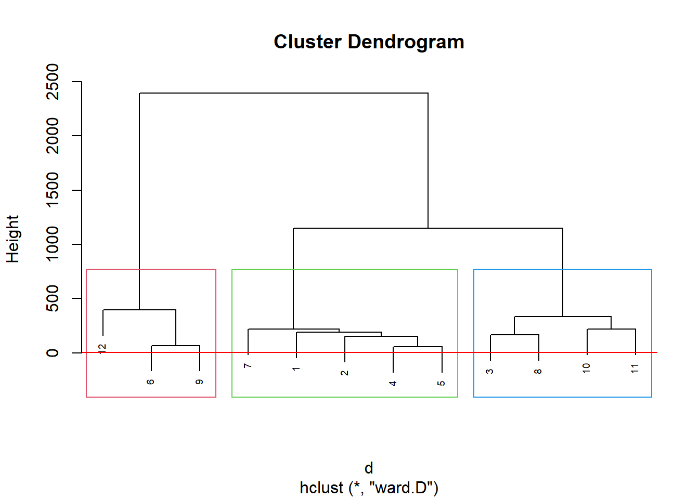
kable(sort(groups)) %>%
kable_styling(latex_options = "striped")| x |
|---|
| 1 |
| 1 |
| 1 |
| 1 |
| 1 |
| 2 |
| 2 |
| 2 |
| 2 |
| 3 |
| 3 |
| 3 |
Pelo dendograma podemos dividir os dados em 3 clusters.
km1 = kmeans(dadosS, 3)
p1 = fviz_cluster(km1, data=dadosS,
palette = c("#2E9FDF", "#FC4E07", "#E7B800", "#E7B700"),
star.plot=FALSE,
# repel=TRUE,
ggtheme=theme_bw())
p1